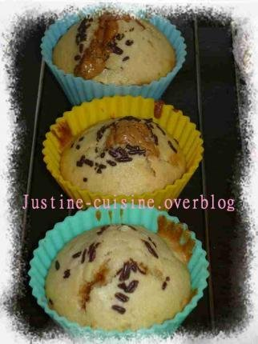

Muffins
Ingredients
8×
- 175 g de farine
- 0.5 sachet de levure
- 100 g de sucre roux
- 1 oeuf
- 12 cl de lait
- 50 g de beurre fondu
- 100 g de chocolat blanc
- quelques noisettes

Préparation
Étape 1
Mélanger 175 g de farine, 0.5 sachet de levure et 100 g de sucre roux.
Étape 2
Dans un autre bol, mélanger 1 oeuf, 12 cl de lait et 50 g de beurre fondu, puis la garniture : 100 g de chocolat blanc cassé et quelques noisettes.
Étape 3
Réunir les deux préparations sans trop mélanger. Répartir dans les moules à muffins.
Étape 4
Cuire 20 à 25min à 190ºC.
Conseils
Variantes de garniture :
- Chocolat blanc coco : 100g de chocolat blanc cassé et 20g de noix de coco.
- Framboises chocolat blanc : 100g de framboises et 100g de chocolat blanc cassé. Si les framboises sont surgelées, ne pas les décongeler et les mettre directement dans les moules sans mélanger.